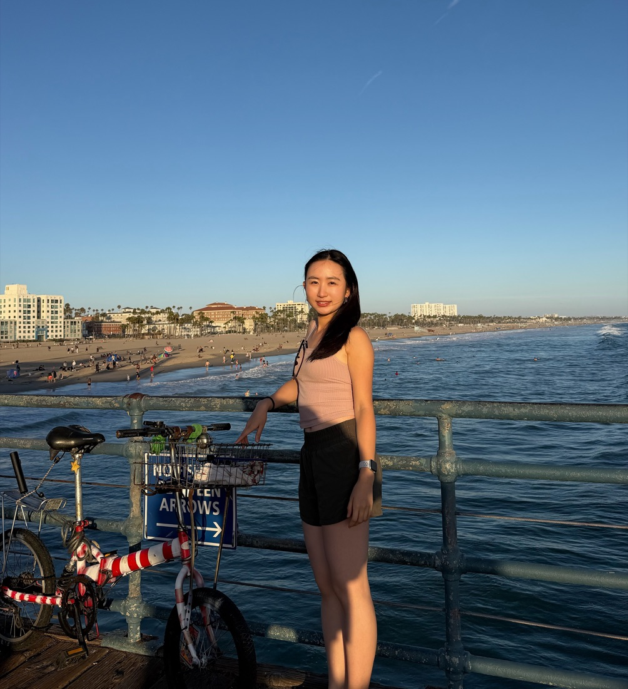
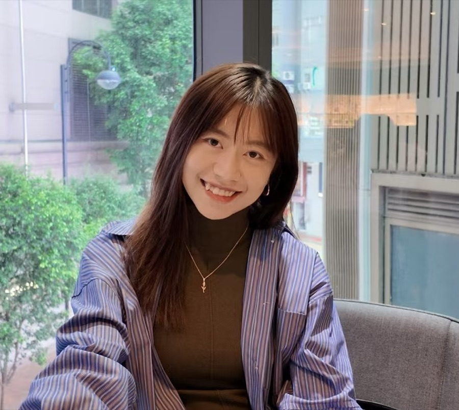

Prof. Sihui (Echo) KE
Principal Investigator
Principal Investigator

Co-Principal Investigator
Undergraduate Student Mentee

Research Mentor
PhD Candidate
The project is affiliated with PolyU’s Department of Language Science and Technology and the Undergraduate Research and Innovation Scheme.